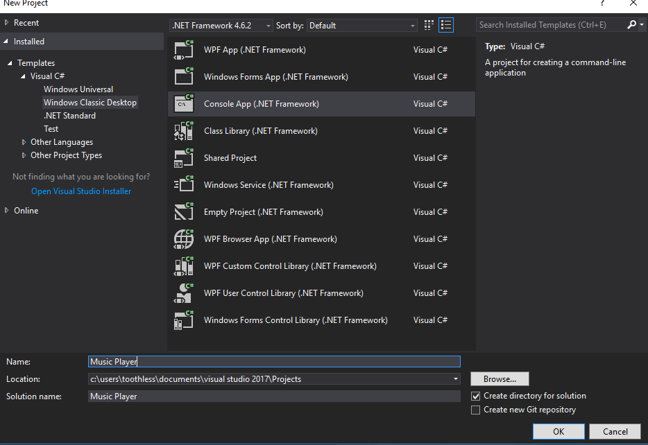
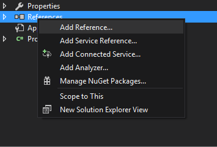
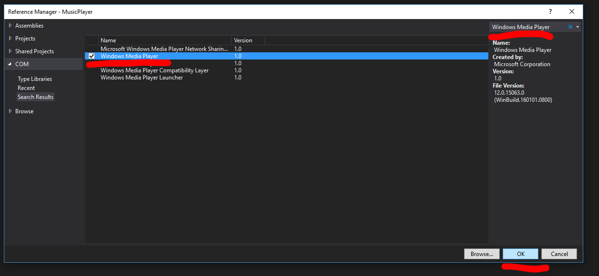

Hi, welcome to my first blog post. In this small series we will create a very simple command line music shuffle player using C# and the WMPLib library. This tutorial assumes basic knowledge of C# (i.e. you know what a variable, function, for loop, etc is and how to use them) and that you have Visual Studio 2017 installed. If you don't have Visual Studio 2017 installed here is the Download Page. Lets get started First let's make a new console app project in Visual Studio 2017
Before we start let's add the reference to the WMP library to the project. this is done by right clicking on references on the right hand side of the window in the solution explorer and selecting "Add Reference...".
Then to add the reference, select "COM" and "Type Libraries" then search "Windows Media Player". In the search box select the check box and click ok (I am using version 12.0.15063.0 however all versions should work the same).
Now all the setup is done lets start actually coding. First things first we need a class to start working with so lets start with a skeleton class including all of the references that we will initially need.
using System;using WMPLib;namespace MusicPlayer {static class Program {static void Main(string [] args) { } } }
Here we have created a new class calledProgram and given it a method. The Main() method is what the C# run time looks for to start your program so if it is not there then you program will not work. So now let's add the ability to play one song that is specified in code to finish up this first part of the tutorial.
The highlighted code will be used throughout this tutorial to signify that this is a new area of code you should add.
static class Program {private static string musicPath;private static WindowsMediaPlayer player;static void Main(string [] args) { player =new WindowsMediaPlayer (); musicPath ="C:\\music\\song.mp3" ; player.URL = musicPath; player.controls.play();Console .ReadLine(); } }
So what we have done here is create two variables one to hold the song's path and another to actually play the song. When the code is run anew WindowsMediaPlayer () object will be created and stored in player. Then the musicPath variable is assigned the value you have entered, after that it is then used to set the URL variable in player. Once that is done the song is played and the console is kept open byConsole .ReadLine(), if this line was not present immediately after running starting the song the console would close stopping the song. Next time we will use this method to get user input as to what file path they would like to get music from.
"." is called a Dot Operator and it allows us to acess public data stored within a variable. The player variable is a reference to and object with a variable URL in it. To access this we use the dot operator. Think of it like a folder with a file within it. So the path would be player\URL
It is anInterface . This thing looks like a class and can declare methods however cannot implement them. An example is shown below:
public interface MyInterface {void Foo(); }public class InterfaceExample :MyInterface {public void Foo() {//Foo implementation } }
As you can see the interface declared a method called Foo() however does not implement it, this is the job of the child class, in this caseInterfaceExample , to actually implement the method.
As C# does not allow for multi class inheritance unlike a language like Java. But C# does allow for multiple inheritance from an interface so they can be used to include behavior from multiple classes. The C# MSDN explains this much better than I ever could to here is a link to it: Interfaces (C# Programming Guide)
This a feature of object oriented programming and allows you to define a base or parent class for another class to derive from. The base class can define specific behavior and variable for the child that the child will also have access to. The child class may also change the behavior of the base class by overriding the bases methods or variables. The child may also implement new methods and variable of its own that it may use however the base class cannot access. Child class can also be base classes for another class and multiple classes may derive from the same base. There is a good explanation and some good example on the C# MSDN that go into some complex stuff like reflection we may use inheritance in a different tutorial series at some point: Inheritance in C# and .NET
So that is the end of the first tutorial. In summary we have learned how to:
Back To Collection | Previous | Next